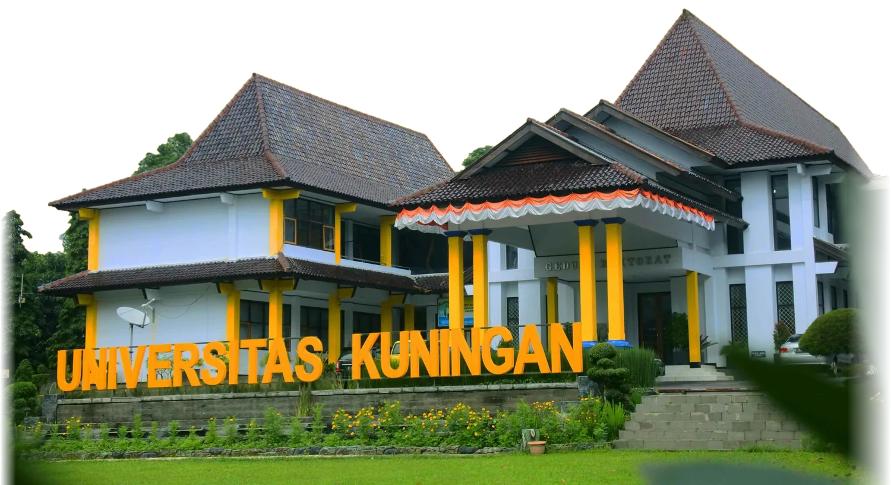

Tidak ada alumni yang cocok dengan filter kamu. Coba kurangi filter atau ganti kata kunci.
Fakultas Ilmu Komputer, Universitas Kuningan
Lihat di mana lulusan Sistem Informasi, Teknik Informatika, Desain Komunikasi Visual, dan Teknik Sipil berkarya sekarang. Cari berdasarkan nama, prodi, angkatan, bidang kerja, atau kota.

Tidak ada alumni yang cocok dengan filter kamu. Coba kurangi filter atau ganti kata kunci.